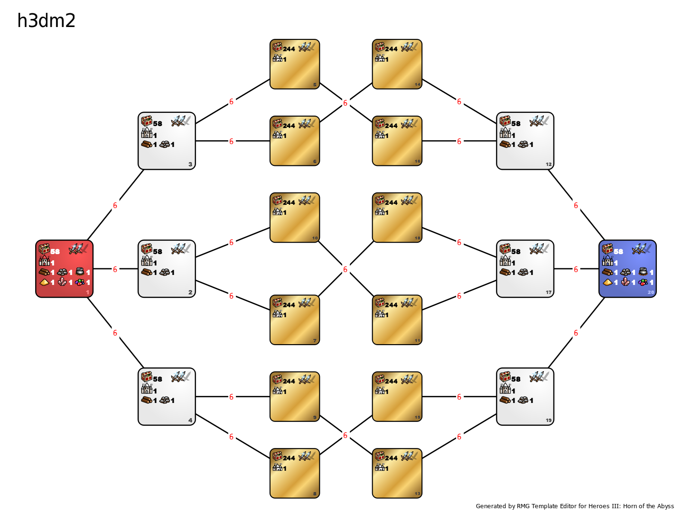

h3dm3.2

h3dm3.1 is template created by Xocenk for True Mirror 2 tournament.
Diffrence from 3.1 version is there is no zone repulsion.
Chagnes compared to h3dm1/h3dm2.1 (they are the same):
-
Object changes:
- Disabled Tavern,
- Disabled Shrine of Magic Mystery (level 4),
- Imp Cache value decreased from 5000 to 3000,
-
Banned heroes: Leena, Ciele, Vidomina, Thant, Solmyr, Aislinn, Giselle and Deemer,
-
Enabled heroes: Mutare, Mutare Drake, Boragus, Roland and Katherine,
-
The number of rounds is limited from 100 to 50,
-
Disabled artifacts: wood wagon, ore wagon, symbol of knowledge.
-
Zone repulsion is off.